<app-header (boolean)="themeCtrl($event)"></app-header>
<section class="cont main animate__animated animate__fadeInUp">
  <div class="canvas-container">
    <canvas #canvas></canvas>
  </div>
  <div>
    <h1 class="text-shadow title-big">Carreira</h1>
    <app-timeline></app-timeline>
  </div>
</section>
<section>
  <h1 class="text-shadow pb-10 pt-10 title-big">Portfolio</h1>
  <div class="mb-14">
    <app-slider-cards  title='Experiências Profissionais' desc='Não incluídos projetos internos.' [data]="dataset"></app-slider-cards>
  </div>
  <div class="mt-5">
    <app-slider-cards title='Outros Projetos' [data]="others"></app-slider-cards>
  </div>
</section>
<section [style.background]="'radial-gradient(circle at ' + mouseX + 'px ' + mouseY + 'px, rgba(0,126,237,1) 0%, rgba(0,110,218,1) 25%, rgba(0,95,199,1) 50%, rgba(0,79,180,1) 75%, rgba(0,63,161,1) 100%)'">
    <!--Waves Container-->
    <div class="control" *ngIf="boo == false">
      <svg class="waves" xmlns="http://www.w3.org/2000/svg" xmlns:xlink="http://www.w3.org/1999/xlink"
      viewBox="0 24 150 28" preserveAspectRatio="none" shape-rendering="auto">
      <defs>
      <path id="gentle-wave" d="M-160 44c30 0 58-18 88-18s 58 18 88 18 58-18 88-18 58 18 88 18 v44h-352z" />
      </defs>
      <g class="parallax">
      <use xlink:href="#gentle-wave" x="48" y="0" fill="rgba(255,255,255,0.7" />
      <use xlink:href="#gentle-wave" x="48" y="3" fill="rgba(255,255,255,0.5)" />
      <use xlink:href="#gentle-wave" x="48" y="5" fill="rgba(255,255,255,0.3)" />
      <use xlink:href="#gentle-wave" x="48" y="7" fill="#FAF5FF" />
      </g>
      </svg>
    </div>
    <div class="control" *ngIf="boo == true">
      <svg class="waves" xmlns="http://www.w3.org/2000/svg" xmlns:xlink="http://www.w3.org/1999/xlink"
      viewBox="0 24 150 28" preserveAspectRatio="none" shape-rendering="auto">
      <defs>
      <path id="gentle-wave" d="M-160 44c30 0 58-18 88-18s 58 18 88 18 58-18 88-18 58 18 88 18 v44h-352z" />
      </defs>
      <g class="parallax">
      <use xlink:href="#gentle-wave" x="48" y="0" fill="rgba(11, 18, 21,0.7" />
      <use xlink:href="#gentle-wave" x="48" y="3" fill="rgba(11, 18, 21,0.5)" />
      <use xlink:href="#gentle-wave" x="48" y="5" fill="rgba(11, 18, 21,0.3)" />
      <use xlink:href="#gentle-wave" x="48" y="7" fill="#0B1215" />
      </g>
      </svg>
    </div>
      <!--Waves end-->
  <app-contact [boo]="boo"></app-contact>
</section>

<button class="gotop" (click)="topFunction()" [hidden]="!showButton">
  
  
</button>
